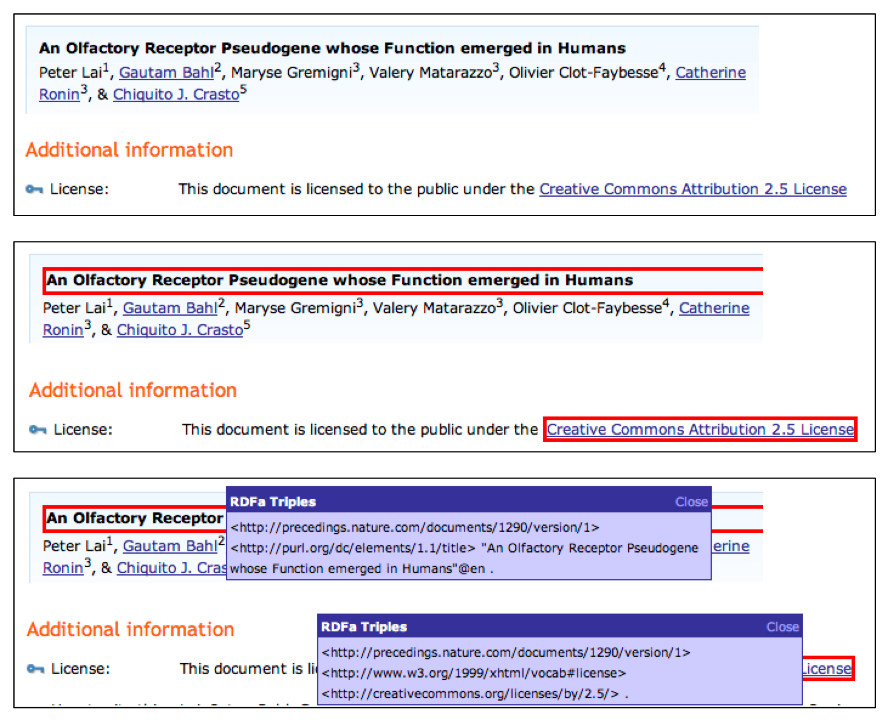

|
Hal Abelson, Ben Adida, Mike Linksvayer, Nathan Yergler
[hal,ben,ml,nathan]@creativecommons.org
Version 1.0 - April 8th, 2008
This paper introduces the Creative Commons Rights Expression Language (ccREL), the standard recommended by Creative Commons (CC) for machine-readable expression of copyright licensing terms and related information.1 ccREL and its description in this paper supersede all previous Creative Commons recommendations for expressing licensing metadata. Like CC's previous recommendation, ccREL is based on the World-Wide Web Consortium's Resource Description Framework (RDF).2Compared to the previous recommendation, ccREL is intended to be both easier for content creators and publishers to provide, and more convenient for user communities and tool builders to consume, extend, and redistribute.3
Formally, ccREL is specified in an abstract syntax-free way, as an extensible set of properties to be associated with a licensed documents. Publishers have wide discretion in their choice of syntax, so long as the process for extracting the properties is discoverable and tool builders can retrieve the properties of ccREL-compliant Web pages or embedded documents. We also recommend specific concrete "default" syntaxes and embedding schemes for content creators and publishers who want to use CC licenses without needing to be concerned about extraction mechanisms. The default schemes are RDFa for HTML Web pages and resources referenced therein, and XMP for stand-alone media.4
<div about="http://lessig.org/blog/" xmlns:cc="http://creativecommons.org/ns#"> This page, by <a property="cc:attributionName" rel="cc:attributionURL" href="http://lessig.org/"> Lawrence Lessig </a>, is licensed under a <a rel="license" href="http://creativecommons.org/licenses/by/3.0/"> Creative Commons Attribution License </a>. </div>
From this markup, tools can easily and reliably determine that http://lessig.org/blog/ is licensed under a CC Attribution License, v3.0, where attribution should be given to "Lawrence Lessig" at the URL http://lessig.org/.
This paper explains the design rationale for these recommendations and illustrates some specific applications we expect ccREL to support. We begin with a review of the original 2002 recommendation for Creative Commons metadata and we explain why, as Creative Commons has grown, we have come to regard this as inadequate. We then introduce ccREL in the syntax-free model: as a vocabulary of properties. Next, we describe the recommended concrete syntaxes. In addition, we explain how other frameworks, such as microformats, can be made ccREL compliant. Finally, we discuss specific use cases and the types of tools we hope to see built to take advantage of ccREL.
Creative Commons was publicly launched in December 2002, but its genesis traces to summer 2000 and discussions about how to promote a reasonable and flexible copyright regime for the Internet in an environment where copyright had become unreasonable and inflexible. There was no standard legal means for creators to grant limited rights to the public for online material, and obtaining rights often required difficult searches to identify rights-holders and burdensome transaction costs to negotiate permissions. As digital networks dramatically lowered other costs and engendered new opportunities for producing, consuming, and reusing content, the inflexibility and costs of licensing became comparatively more onerous.
Over the following year, Creative Commons' founders came to adopt a two-pronged response to this challenge. One prong was legal and social: create widely applicable licenses that permit sharing and reuse with conditions, clearly communicated in human-readable form. The other prong called for leveraging digital networks themselves to make licensed works more reusable and easy to find; that is, to lower search and transaction costs for works whose copyright holders have granted some rights to the public in advance. Core to this technical component is the ability for machines to detect and interpret the licensing terms as automatically as possible. Simple programs should thus be able to answer questions like:
Equally important is constructing a robust user-machine bridge for publishing and detecting structured licensing information on the Web, and stimulating the emergence of tools that lower the barriers to collaboration and remixing. For example, if a Web page contains multiple images, not all licensed identically, can users easily determine which rights are granted on a particular image? Can they easily extract this image, create derivative works, and distribute them while assigning proper credit to the original author? In other words, is there a clear and usable connection between what the user sees and what the machine parses? ccREL aims to be a standard that implementors can follow in creating tools that make these operations simple.
As early as fall 2001, Creative Commons had settled on the approach of creating machine-readable licenses based on the World Wide Web Consortium's then-emerging Resource Description Framework (RDF), part of the W3C Semantic Web Activity.5
The motivation for choosing RDF in 2001, and for continuing to use it now, is strongly connected to the Creative Commons vision: promoting scholarly and cultural progress by making it easy for people to share their creations and to collaborate by building on each other's work. In order to lower barriers to collaboration, it is important that the machine expression of licensing information and other metadata be interoperable. Interoperability here means not only that different programs can read particular metadata properties, but also that vocabularies--sets of related properties--can evolve and be extended. This should be possible in such a way that innovation can proceed in a distributed fashion in different communities--authors, musicians, photographers, cinematographers, biologists, geologists, an so on--so that licensing terms can be devised by local communities for types of works not yet envisioned. It is also important that potential extensions be backward compatible: existing tools should not be disrupted when new properties are added. If possible, existing tools should even be able to handle basic aspects of new properties. This is precisely the kind of "interoperability of meaning" that RDF is designed to support.
RDF is a framework for describing entities on the Web. It provides exceptionally strong support for interoperability and extensibility. All entities in RDF are named using a simple, distributed, globally addressable scheme already well known to Web users: the URL, and its generalization the URI.6
For example, Lawrence Lessig's blog, a document identified by its URL http://lessig.org/blog/, is licensed under the Creative Commons Attribution license. That license is also a document, identified by its own URL http://creativecommons.org/licenses/by/3.0/. The property of "being licensed under", which we'll call "license" can itself be considered a Web object and identified by a URL. This URL is http://www.w3.org/1999/xhtml/vocab#license, which refers to a Web page that contains information describing the "license" property. This particular Web page, maintained by the Web Consortium, is the reference document that describes the vocabulary supported as part of the Web standard XHTML language.7
Instantiating properties as URLs enables anyone to use those properties to formulate descriptions, or to discover detailed information about an existing property by consulting the page at the URL, or to make new properties available simply by publishing the URLs that describe those properties.
As a case in point, Creative Commons originally defined its own "license" property, which it published at http://creativecommons.org/ns#license,8since no other group had defined in RDF the concept of a copyright license. When the XHTML Working Group introduced its own license property in 2005, we opted to start using their version, rather than maintain our own CC-dependent notion of license. We were then able to declare that http://creativecommons.org/ns#license is equivalent to the new property http://www.w3.org/1999/xhtml/vocab#license, simply by updating the description at http://creativecommons.org/ns#license. Importantly, RDF makes this equivalence interpretable by programs, not just humans, so that "old" RDF license declarations can be automatically interpreted using the new vocabulary.
In general, atomic RDF descriptions are called triples. Each triple consists of a subject, a property, and a value for that property of the subject. The triple that describes the license for Lessig's blog could be represented graphically as shown in figure 1: a point (the subject) labeled with the blog URL, a second point (the value) labeled with the license URL, and an arrow (the property) labeled with the URL that describes the meaning of the term "license", running from the blog to the license. In general, an RDF model, as a collection of triples, can be visualized as a graph of relations among elements, where the edges and vertices are all labeled using URIs.
Abstract RDF graphs can be expressed textually in various ways. One commonly used notation, RDF/XML, uses XML syntax. In RDF/XML the triple describing the licensing of Lessig's blog is denoted:
<rdf:RDF xmlns:rdf="http://www.w3.org/1999/02/22-rdf-syntax-ns#" xmlns:xhtml="http://www.w3.org/1999/xhtml/vocab#"> <rdf:Description rdf:about="http://www.lessig.org/blog/"> <xhtml:license rdf:resource="http://creativecommons.org/licenses/by/3.0/" /> </rdf:Description> </rdf:RDF>
One desirable feature of RDF/XML notation is that it is completely self-contained: all identifiers are fully qualified URLs. On the other hand, RDF/XML notation is extremely verbose, making it cumbersome for people to read and write, especially if no shorthand conventions are used. Even this simple example (verbose as it is) uses a shorthand mechanism: the second line of the description beginning xmlns:xhtml defines "xhtml:" to be an abbreviation for http://www.w3.org/1999/xhtml/vocab#, thus expressing the license property in its shorter form, xhtml:license, on the fourth line.
Since the introduction of RDF, the Web Consortium has developed more compact alternative syntaxes for RDF graphs. For example the N3 syntax would denote the above triple more concisely:9
<http://lessig.org/blog/> <http://www.w3.org/1999/xhtml#license> <http://creativecommons.org/licenses/by/3.0/> .
We could also rewrite this using a shorthand as in the RDF/XHTML example above, defining: xhtml: as an abbreviation for http://www.w3.org/1999/xhtml/vocab#:
@prefix xhtml: <http://www.w3.org/1999/xhtml/vocab#> <http://lessig.org/blog/> xhtml:license <http://creativecommons.org/licenses/by/3.0/> .
The shorthand does not provide improved compactness or readability if a prefix is only used once as above, of course. In N3, prefixes are typically defined only when they are used more than once, for example to express multiple properties taken from the same vocabulary. In RDF/XML, because of the stricter parsing rules of XML, there is a bit less flexibility: predicates can only be expressed using the shorthand, while subjects can only be expressed using the full URI.
With its first unveiling of machine-readable licenses in 2002, Creative Commons recommended that publishers use the RDF/XML syntax to express license properties. The CC web site included a Web-based license generator, where publishers could answer a questionnaire to indicate what kind of license they wished, and the generator then provided RDF/XML text for them to include on their Web pages, inside HTML comments:
<!-- [RDF/XML HERE] -->
We knew at the time that this was a cumbersome design, but there was little alternative. RDF/XML, despite its verbosity, was the only standard syntax for expressing RDF. Worse, the Web Consortium's Semantic Web Activity was focused on providing organizations with ways to annotate databases for integration into the Web, and it paid scant attention to the issues of intermixing semantic information with visible Web elements. A task force had been formed to address these issues, but there was no W3C standard for including RDF in HTML pages.
One consequence of CC's limited initial design is that, although millions of Web pages now include Creative Commons licenses and metadata, there is no uniform, extensible way for tool developers to access this metadata, and the tools that do exist rely on ad-hoc techniques for extracting metadata.
Since 2004, Creative Commons has been working with the Web Consortium to create more straightforward and less limited methods of embedding RDF in HTML documents. These new methods are now making their way through the W3C standards process. Accordingly,
Creative Commons no longer recommends using RDF/XML in HTML comments for specifying licensing information. This paper supersedes that recommendation.
We hope that the new ccREL standard presented in this paper will result in a more consistent and stable platform for publishers and tool builders to build upon Creative Commons licenses.
This section describes ccREL, Creative Commons' new recommendation for machine-readable licensing information, in its abstract form, i.e., independent of any concrete syntax. As an abstract specification, ccREL consists of a small but extensible set of RDF properties that should be provided with each licensed object. This abstract specification has evolved since the original introduction of CC properties in 2002, but it is worth noting that all first-generation licenses are still correctly interpretable against the new specification, thanks in large part to the extensibility properties of RDF itself.
The abstract model for ccREL distinguishes two classes of properties:
Publishers will normally be concerned only with Work properties: this is the only information publishers provide to describe a Work's licensing terms. License properties are used by Creative Commons itself to define the authoritative specifications of the licenses we offer. Other organizations are free to use these components for describing their own licenses. Such licenses, although related to Creative Commons licenses, would not themselves be Creative Commons licenses nor would they be endorsed necessarily by Creative Commons.
A publisher who wishes to license a Work under a Creative Commons license must, at a minimum, provide one RDF triple that specifies the value of the Work's license property (i.e., the license that governs the Work), for example
<http://lessig.org/blog/> xhtml:license <http://creativecommons.org/licenses/by/3.0/> .
Although this is the minimum amount of information, Creative Commons also encourages publishers to include additional triples giving information about licensed works: the title, the name and URL for assigning attribution, and the document type. An example might be
<http://lessig.org/blog/> dc:title "The Lessig Blog" . <http://lessig.org/blog/> cc:attributionName "Larry Lessig" . <http://lessig.org/blog/> cc:attributionURL <http://lessig.org/> . <http://lessig.org/blog/> dc:type dcmitype:Text .
The specific work properties illustrated here are
Incidentally, the above list of four triples could be alternately expressed using the N3 semicolon convention, which indicates a list of triples that all have the same subject:
@prefix dc: <http://purl.org/dc/elements/1.1/> @prefix cc: <http://creativecommons.org/ns#> @prefix dcmitype: <http://purl.org/dc/dcmitype/> <http://lessig.org/blog/> dc:title "The Lessig Blog" ; cc:attributionName "Larry Lessig" ; cc:attributionURL <http://lessig.org/> ; dc:type dcmitype:Text .
There are two more Work properties available to publishers of CC material:
<http://randomblog.org/modified_lessig_presentation> dc:source <http://lessig.org/> .
A typical use would then be:
<http://randomblog.org/insightful_posting> cc:morePermissions <http://randomblog.org/attribution_free_licensing> .
The information at the designated URL is completely up to the publisher, as are the terms of the associated additional permissions, with one proviso: The additional permissions must be additional permissions, i.e., they cannot restrict the rights granted by the Creative Commons license. Said another way, any use of the work that is valid without taking the morePermissions property into account, must remain valid after taking morePermissions into account.
This is the current set of ccREL Work properties. New properties may be added over time, defined by Creative Commons or by others. Observe that ccREL inherits the underlying extensibility of RDF--all that is required to create new properties is to include additional triples that use these. For example, a community of photography publishers could agree to use an additional photoResolution property, and this would not disrupt the operation of pre-existing tools, so long as the old properties remain available. We'll see below that the concrete syntax (RDFa) recommended by Creative Commons for ccREL enjoys this same extensibility property.
Distributed creation of new properties notwithstanding, only Creative Commons can include new elements in the cc: namespace, because Creative Commons controls the defining document at http://creativecommons.org/ns#. This ability to retain this kind of control, without loss of extensibility, is a direct consequence of using RDF.
We now consider properties used for describing Licenses. With ccREL, Creative Commons does not expect publishers to use these license properties directly, or even to deal with them at all.
In contrast, Creative Commons' original metadata recommendation encouraged publishers to provide the license properties with every licensed work. This design was awkward, because once a publisher has already indicated which license governs the Work, specifying the license properties in addition is redundant and thus error prone. The ccREL recommendation does away with this duplication and leaves it to Creative Commons to provide the license properties.
Tool builders, on the other hand, should take these License properties into account so that they can interpret the particulars of each Creative Commons license. The License properties governing a Work will typically be found by URL-based discovery. A tool examining a Work notices the xhtml:license property and follows the indicated link to a page for the designated license. Those license description pages--the "Creative Commons Deeds"-- are maintained by Creative Commons, and include the license properties in the CC recommended concrete syntax (RDFa), as described in section 7.2:
Here are the License properties defined as part of ccREL:
Importantly, Creative Commons does not allow third parties to modify these properties for existing Creative Commons licenses. That said, publishers may certainly use these properties to create new licenses of their own, which they should host on their own servers, and not represent as being Creative Commons licenses.
The possible values for cc:permits, i.e., the possible permissions granted by a CC License are:
The possible values for cc:prohibits, i.e., possible prohibitions that modulate permissions (but do not affect permissions granted by copyright law, such as fair use) are:
The possible values for cc:requires are:
For example, the Attribution Share-Alike v3.0 Creative Commons license is described as:12
@prefix cc: http://creativecommons.org/ns# <http://creativecommons.org/licenses/by-sa/3.0/> cc:permits cc:Reproduction ; cc:permits cc:Distribution ; cc:permits cc:DerivativeWorks ; cc:requires cc:Attribution ; cc:requires cc:ShareAlike ; cc:requires cc:Notice .
As new copyright licenses are introduced, Creative Commons expects to add new permissions, requirements, and prohibitions. However, it is unlikely that Creative Commons will introduce new license property types beyond permits, requires, and prohibits. As a result, tools built to understand these three property types will be able to interpret future licenses, at least by listing the license's permissions, requirements, and prohibitions: thanks to the underlying RDF framework of designating properties by URLs, these tools can easily discover human-readable descriptions of these as-yet-undefined property values.
While the previous examples illustrate ccREL using the RDF/XML and N3 notations, ccREL is meant to be independent of any particular syntax for expressing RDF triples. To create compliant ccREL implementations, publishers need only arrange that tool builders can extract RDF triples for the relevant ccREL properties--typically only the Work properties, since Creative Commons provides the License properties--through a discoverable process. We expect that different publishers will do this in different ways, using syntaxes of their choice that take into account the kinds of environments they would like to provide for their users. In each case, however, it is the publisher's responsibility to associate their pages with appropriate extraction mechanisms and to arrange for these mechanisms to be discoverable by tool builders.
Creative Commons also recommends concrete ccREL syntaxes that tool builders should recognize by default, so that publishers who do not want to be explicitly concerned with extraction mechanisms have a clear implementation path. These recommended syntaxes--RDFa for HTML Web pages, and XMP for free-floating content--are described in the following sections. This section presents the principles underlying our recommendations.
Licensing information for a Web document will be expressed in some form of HTML. What properties would an ideal HTML syntax for expressing Creative Commons terms exhibit? Given the use cases we've observed over the past several years, we can call out the following desiderata:
Some important works are not typically conveyed via HTML. Examples are MP3s, MPEGs, and other media files. The technique for embedding licensing data into these files should achieve the following design principles:
Consider the abstract model for ccREL. Here, again, are the triples from the Lessig blog example, expressed in N3.13
@prefix xhtml: <http://www.w3.org/1999/xhml#> . @prefix cc: <http://creativecommons.org/ns#> . <http://lessig.org/blog/> xhtml:license <http://creativecommons.org/licenses/by/3.0/> . <http://lessig.org/blog/> cc:attributionName "Lawrence Lessig" . <http://lessig.org/blog/> cc:attributionURL <http://lessig.org/> .
The Web page to which this information refers typically already contains some HTML that describes this same information (redundantly), in human-readable form, for example:
<div> This page, by <a href="http://lessig.org/"> Lawrence Lessig </a>, is licensed under a <a href="http://creativecommons.org/licenses/by/3.0/"> Creative Commons Attribution License </a>. </div>
What we would like is a way to quickly augment this HTML with just enough structure to enable the extraction of the RDF triples, using the principles articulated above, including, notably, Don't Repeat Yourself: the existing markup and links should be used both for human and machine readability.
RDFa was designed by the W3C with Creative Commons' input. The design was motivated in part by the principles noted above. Using existing HTML properties and a handful of new ones, RDFa enables a chunk of HTML to express RDF triples, reusing the content wherever possible. For example, the HTML above would be extended by including additional attributes within the HTML anchor tags as follows:
<div about="" xmlns:cc="http://creativecommons.org/ns#"> This page, by <a property="cc:attributionName" rel="cc:attributionURL" href="http://lessig.org/"> Lawrence Lessig </a>, is licensed under a <a rel="license" href="http://creativecommons.org/licenses/by/3.0/"> Creative Commons Attribution License </a>. </div>
The rules for understanding the meaning of the above markup are as follows:
The fragment of HTML (within the div) is entirely self-contained (and thus remix-friendly). Its meaning would be preserved if it were copied and pasted into another Web page. The data's structure is local to the data itself: a human looking at the page could easily identify the structured data by pointing to the rendered page and finding the enclosing chunk of HTML. In addition, the clickable links and rendered author names gain semantic meaning without repeating the core data. Finally, as this is embedded RDF, the extensibility and independence properties of RDF vocabularies are automatically inherited: anyone can create a new vocabulary or reuse portions of existing vocabularies.
|
<div about="" typeof="cc:Work" xmlns:cc="http://creativecommons.org/ns#" xmlns:dc="http://purl.org/dc/elements/1.1/" align="center"> <img alt="Creative Commons License" src="http://i.creativecommons.org/l/by/3.0/us/88x31.png" /> <br /> <span property="dc:title">The Lessig Blog</span>, a <span rel="dc:type" href="http://purl.org/dc/dcmitype/Text"> collection of texts </span> by <a property="cc:attributionName" rel="cc:attributionURL" href="http://lessig.org/"> Lawrence Lessig </a>,<br /> is licensed under a <a rel="license" href="http://creativecommons.org/licenses/by/3.0/"> Creative Commons Attribution License </a>.<br /> There are <a rel="cc:morePermissions" href="http://lessig.org/blog/other-license"> alternative licensing options </a>. </div> 
|
Of course, one can continue to add additional data, both visible and structured. Figure 2 shows a more complex example that includes all Work properties currently supported by Creative Commons, including how this HTML+RDFa would be rendered on a Web page. Notice how properties can be associated with HTML spans as well as anchors, or in fact with any HTML elements--see the RDFa specification for details.
The examples in this section illustrate how publishers can specify Work properties. One can also use RDFa to express License properties. This is what Creative Commons does with the license description pages on its own site, as described below in section 7.2.
Microformats are a set of simple, open data formats "designed for humans first and machines second." They provide domain-specific syntaxes for annotating data in HTML. At the moment, the two widely deployed "compound" microformats annotate contact information (hCard) and calendar events (hCal). Of the "elemental" microformats, those meant to annotate a single data point, the most popular is rel-tag, used to denote a "tag" on an item, e.g. a blog post. Another elemental microformat is rel-license, which is meant to indicate the current page's license and which, conveniently, uses a syntax which overlaps with RDFa: rel="license". Other microformats may, over time, integrate Creative Commons properties, for example when licensing images, videos, and other multimedia content.14
Microformat designers have focused on simplicity and readability, and Creative Commons encourages publishers who use microformats to make it easy for tool builders to extract the relevant ccREL triples. Nonetheless, microformats' syntactic simplicity comes at the cost of independence and extensibility, which makes them limited from the Creative Commons perspective.
For example, every time a Creative Commons license needs to be expressed in a new context--e.g. videos instead of still images--a new microformat and syntax must be designed, and all parsers must then, somehow, become aware of the change. It is also not obvious how one might combine different microformats on a single Web page, given that the syntax rules may differ and even conflict from one microformat to the next.15 Finally, when it comes time to express complex data sets with ever expanding sets of properties, e.g., scientific data, microformats do not appear to scale appropriately, given their lack of vocabulary scoping and general inability to mix vocabularies from independently developed sources--the kind of mixing that is enabled by RDF's use of namespaces.
Thus, Creative Commons does not recommend any particular microformat syntax for ccREL, but we do recommend a method for ensuring that, when publishers use microformats, tool builders can extract the corresponding ccREL properties: use an appropriate profile URL in the header of the HTML document.16This profile URL significantly improves the independence and extensibility of microformats by ensuring that the tools can find the appropriate parser code for extracting the ccREL abstract model from the microformat, without having to know about all microformats in advance. One downside is that the microformat syntax then becomes less remix-friendly, with two disparate fragments: one in the head to declare the profile, and one in the body to express the data. Even so, the profile approach is likely good enough for simple data. It is worth noting that this use of a profile URL is already recommended as part of microformats' best practices, though it is unfortunately rarely implemented today in deployed applications.
Not all documents on the web are HTML: one popular syntax for representing structured data in XML. Given that XML is a machine-readable syntax, often with a strict schema depending on the type of data expressed, not all of the principles we outlined are useful here. In particular, visual locality is not relevant when the reader is a machine rather than a human, and remix-friendliness doesn't really apply when XML fragments are rarely remixable in the first place, given schema validation. Thus, we focus on independence and extensibility, as well as DRY.
When publishing Creative Commons licensing information inside an XML document, Creative Commons recommends exposing a mechanism to extract the ccREL abstract model from the XML, so that Creative Commons tools need not know about every possible XML schema ahead of time. The W3C's GRDDL recommendation performs exactly this task by letting publishers specify, either in each XML document or once in an XML schema, an XSL Transformation that extracts RDF/XML from XML.17Consider, for example, a small extension of the Atom XML publishing schema for news feeds:18
<entry> <title>Lessig 2.0 - the site</title> <link rel="alternate" type="text/html" href="http://lessig.org/blog/2007/06/lessig_20_the_site.html" /> <id>tag:lessig.org,2007:/blog//1.3401</id> <published>2007-06-25T19:44:48Z</published> <link rel="license" type="text/html" href="http://creativecommons.org/licenses/by/3.0/us/" /> </entry>
An appropriate XSL Transform can easily process this data to extract the ccREL property that specifies the license:
<rdf:RDF about="http://lessig.org/blog/2007/06/lessig_20_the_site.html" xmlns:cc="http://creativecommons.org/ns#"> <cc:license resource="http://creativecommons.org/licenses/by/3.0/us/" /> </rdf:RDF>
Similarly, the Open Archives Initiative, defines a complex XML schema for library resources.19 These resources may include megabytes of data, including sometimes the entire resource in full text. Using XSLT, one can extract the relevant ccREL information, exactly as above. Using GRDDL, the Open Archives Initiative can specify the XSLT in its XML schema file, so that all OAI documents are automatically transformable to RDF/XML, which immediately conveys ccREL.
This approach can be made ccREL compliant with very little work--a simple GRDDL transform, declared in the XML schema definition, that extracts the RDF/XML and expresses it on its own. Note that, for ccREL compliance, this transform, although simple, is necessary. The reason for its necessity goes to the crux of the ccREL principles: without such a transform provided by each XML schema designer, tools would have to be aware of all the various XML schemas that include RDF/XML in this way. For extensibility and future-proofing, ccREL asks that publishers of the schema make the effort to provide the extraction mechanism. With explicit extraction mechanisms, publishers have a little bit more work to do, while tool builders are immediately empowered to create generic programs that can process data they have never seen before.
We turn to the precise Creative Commons recommendation for embedding ccREL metadata inside MP3s, Word documents, and other "free-floating" content that is often passed around in a peer-to-peer fashion, via email or P2P networks. We note that there are two distinct issues to resolve:
We handle accountability for free-floating content by connecting any free-floating document to a Web page, and placing the ccREL information on that Web page. Thus, publishers of free-floating content are just as accountable as publishers of Web-based content: rights are always expressed on a Web page. The connection between the Web page and the binary file it describes is achieved using a cryptographic hash, i.e. a fingerprint, of the file. For example, the PDF file of Lawrence Lessig's "Code v2" will contain a reference to http://codev2.cc/download+remix, which itself will contain a reference to the SHA1 hash of the PDF file. The owner of the URL http://codev2.cc/download+remix is thus taking responsibility for the ccREL statements it makes about the file.
For expression, we recommend XMP. XMP has the broadest support of any embedded metadata format (perhaps it is the only such format with anything approaching broad support) across many different media formats. With the exception of media formats where a workable embedded metadata format is already ubiquitous (e.g. MP3), Creative Commons recommends adopting XMP as an embedded metadata standard and using the following two fields in particular:
Consider our example of Lessig's "Code v2", a Creative Commons licensed, community-edited second version of his original "Code and Other Laws of Cyberspace." The PDF of this book, available at http://pdf.codev2.cc/Lessig-Codev2.pdf, contains XMP metadata as follows:
<?xpacket begin="" id=""?> <x:xmpmeta xmlns:x="adobe:ns:meta/"> <rdf:RDF xmlns:rdf="http://www.w3.org/1999/02/22-rdf-syntax-ns#"> <rdf:Description rdf:about="" xmlns:xapRights="http://ns.adobe.com/xap/1.0/rights/"> <xapRights:Marked>True</xapRights:Marked> <xapRights:WebStatement rdf:resource="http://codev2.cc/download+remix/" /> </rdf:Description> ... <rdf:Description rdf:about="" xmlns:cc="http://creativecommons.org/ns#"> <cc:license rdf:resource="http://creativecommons.org/licenses/by-sa/2.5/" /> </rdf:Description> </rdf:RDF> </x:xmpmeta> <?xpacket end="r"?>
Notice how this is RDF/XML, including a xapRights:WebStatement pointer to the web page http://codev2.cc/download+remix/, which itself contains RDFa:
Any derivative must be licensed under a <a about="urn:sha1:W4XGZGCD4D6TVXJSCIG3BJFLJNWFATTE" rel="license" href="http://creativecommons.org/licenses/by-sa/2.5/"> Creative Commons Attribution-ShareAlike 2.5 License </a>
This RDFa references the PDF using its SHA1 hash--a secure fingerprint of the file that matches only the given PDF file--and declares its Creative Commons license. Thus, anyone that finds the "Code v2" PDF can find its WebStatement pointer, look up that URL, verify that it properly references the file via its SHA1 hash, and confirm the file's Creative Commons license on the web-based deed.
This section describes several examples, first by publishers of Creative Commons licensed works, then by tool builders who wish to consume the licensing information. Some of these examples include existing, real implementations of ccREL, while others are potential implementations and applications we believe would significantly benefit from ccREL.
Publishers can mix ccREL with other markup with great flexibility. Thanks to ccREL's independence and extensibility principle, publishers can use ccREL descriptions in combination with additional attributes taken from other publishers, or with entirely new attributes they define for their own purposes. Thanks to ccREL's DRY principle, even small publishers get the benefit of updating data in one location and automatically keeping the human- and machine-readable in sync.
|
<div class="mediaDetails haudio" xmlns:xsd="http://www.w3.org/2001/XMLSchema" xmlns:dc="http://purl.org/dc/elements/1.1/" xmlns:commerce="http://purl.org/commerce/elements/1.0/" xmlns:hmedia="http://purl.org/hmedia/elements/1.0/" about="#album-6579151"> ... <a id="mediaImageLink" rel="hmedia:depiction" href="http://www.bitmunk.com/view/image/6579151"> ... <h1 property="dc:title" class="mediaTitle album fn">Lifeseeker</h1> ... <span property="dc:creator" class="fn">Lifeseeker</span> ... <span property="dc:contributor" class="fn">(P) 2005 One In A Million Records</span> ... <span property="dc:date" class="published" title="2007-11-18T11:23:07-05:00" content="2007-11-18T11:23:07-05:00" datatype="xsd:date"> 2002-07-23 </span> ... <a href="/browse/genre/audio_album/59" property="dc:type" class="category">Hip Hop and Rap</a> <span class="detailLabel">Tracks:</span> 16 (<abbr property="hmedia:duration" class="duration" title="PT1H13M37S" content="PT1H13M37S" datatype="xsd:duration">1:13:37</span>) ... <span class="detailLabel">Licenses:</span> <img property="dc:license" class="licenseIcon" src="/themes/bm2/images/licenses/sc-sm.png" alt="Standard Copyright" title="Standard Copyright" content="Standard Copyright"/> ... </div> |
A common use case for Web publishers working in a mashup-friendly world is the issue of mixing content with different licenses. Consider, for example, what happens if Larry Lessig's blog reuses an image published by another author and licensed for non-commercial use. Recall that Lessig's Blog is licensed to permit commercial use.
The HTML markup in this case is straightforward:
<div about="" xmlns:cc="http://creativecommons.org/ns#"> This page, by <a property="cc:attributionName" rel="cc:attributionURL" href="http://lessig.org/"> Lawrence Lessig </a>, is licensed under a <a rel="license" href="http://creativecommons.org/licenses/by/3.0/"> Creative Commons Attribution License </a>. <div about="/photos/constitution.jpg"> The photo of the constitution used in this post was originally published by <a rel="dc:source" href="http://example.org/">Joe Example</a>, and is licensed under a <a rel="license" href="http://creativecommons.org/licenses/by-nc/3.0/"> Creative Commons Attribution-NonCommercial License </a>. </div> </div>
The inner <div> uses the about attribute to indicate that its statements concern the photo in question. A link to the original source is provided using the dc:source property, and a different license pointer is given for this photo using the normal anchor with a rel="license" attribute.
Bitmunk is a service that supports artists with a legal, copyright-aware, content distribution service. The service needed a mechanism for embedding structured data about songs and albums directly into their web pages, including licensing information, so that browser add-ons might provide additional functionality around the music, e.g. comparing the price of a particular song at various online stores. Bitmunk first created a microformat called hAudio. They soon realized, however, that they would be duplicating fields when it came time to define hVideo, and that these duplicated fields would no longer be compatible with those of hAudio. More immediately problematic, hAudio's basic fields, e.g. title, would not be compatible with other "title" fields of other microformats.
Thus, Bitmunk created the hAudio RDFa vocabulary. The design process for this vocabulary immediately revealed separate, logical components: Dublin Core for basic properties e.g. title, Creative Commons for licensing, a new vocabulary called "hMedia" for media-specific properties e.g. duration, and a new vocabulary called "hCommerce" for transaction-specific properties e.g. price. Bitmunk was thus able to reuse two existing vocabularies and add features. It was also able to clearly delineate logical components to make it particularly easy for other vocabulary developers to reuse only certain components of the hAudio vocabulary, e.g. hCommerce. Meanwhile, all Creative Commons licensing information is still expressible without alteration.
Figure 3 shows an excerpt of the markup available from Bitmunk at http://bitmunk.com/view/media/6579151. Note that this particular sample is not CC-licensed: it uses standard copyright. A CC-licensed album would be marked up in the same way, with a different license value: Bitmunk was able to develop its vocabulary independent of ccREL, and can now integrate with ccREL simply by adding the appropriate attributes.
|
<div xmlns:dc="http://purl.org/dc/elements/1.1/" xmlns:cc="http://creativecommons.org/ns#" xmlns:flickr="http://flickr.com/ns#" about="http://www.flickr.com/photos/laughingsquid/2034629532/"> ... <h1 property="dc:title">NewTeeVee Live Game Show</h1> ... <img rel="flickr:defaultPhoto" src="http://farm3.static.flickr.com/2320/2034629532_02085434dd.jpg?v=0" /> ... <div property="dc:description"> See the blog post for more info: <a href="http://laughingsquid.com/a-few-random-newteevee-live-photos/"> A Few Random NewTeeVee Live Photos </a> </div> ... This photo is licensed under a <a rel="license" href="http://creativecommons.org/licenses/by-nc-nd/2.0/"> Creative Commons license </a>. If you use this photo within the terms of the license or make special arrangements to use the photo, please list the photo credit as <span property="cc:attributionName">Scott Beale / Laughing Squid</span> and link the credit to <a rel="cc:attributionURL" href="http://laughingsquid.com"> laughingsquid.com </a>. ... Uploaded on <span property="flickr:uploaded" content="2007-11-15"> November 15, 2007 </span> ... <h4>Tags</h4> <a rel="flickr:tag" href="/photos/laughingsquid/tags/newteevee/">NewTeeVee</a> <a rel="flickr:tag" href="/photos/laughingsquid/tags/gigaom/">GigaOm</a> ... <a rel="upcoming:event" href="http://upcoming.org/event/286436">upcoming:event=286436</a> ... </div> |
Flickr hosts approximately 50 million CC-licensed images (as of October 2007). Currently Flickr denotes a license on each image's page with a link to the relevant license qualified by rel="license". This ad-hoc convention, encouraged by the microformats effort, was "grandfathered" into RDFa thanks to the reserved HTML keyword license. Unfortunately, it works only for simple use cases, with a single image on a single page. This approach breaks down when multiple images are viewed on a single page, or when further information, such as the photographer's name, is required.
Flickr could significantly benefit from the ccREL recommendations, by providing, in addition to simple license linking:
In addition, Flickr recently deployed "machine tags," where photographers can add metadata about their images using custom properties. Flickr's machine tags are, in fact, a subset of RDF, which can be represented easily using RDFa. Thus, Creative Commons licensing can be easily expressed alongside Flickr's machine tags using the same technology, without interfering.
Figure 4 shows how the CC-licensed photo at http://www.flickr.com/photos/laughingsquid/2034629532/ would be marked up using ccREL, including the machine tag upcoming:event that associates the photo with an event at http://upcoming.org.
|
<div xmlns:dc="http://purl.org/dc/elements/1.1/" xmlns:cc="http://creativecommons.org/ns#" xmlns:prism="http://prismstandard.org/namespaces/1.2/basic/" xmlns:foaf="http://xmlns.com/foaf/0.1/" about="/documents/1290/version/1"> <h2 property="dc:title">An Olfactory Receptor Pseudogene whose Function emerged in Humans</h2> ... <span rel="dc:creator"><span property="foaf:name">Peter Lai</span></span> <sup>1</sup>, <a rel="dc:creator" href="http://precedings.nature.com/account/show/1068"> <span property="foaf:name">Gautam Bahl</span> </a><sup>2</sup>, ... <dt class="doctype">Document Type:</dt><dd property="dc:type">Manuscript</dd> Received <span property="dc:date">02 November 2007 21:20 UTC</span>; Posted <span property="prism:publicationDate">05 November 2007</span> ... <a rel="prism:category" href="http://precedings.nature.com/subjects/biotechnology"> Biotechnology </a>, ... <ul id="revision-1321-tags" class="taglist"> <li> <a rel="nature:tag" href="http://precedings.nature.com/tags/olfactory+receptors"> olfactory receptors </a> </li> ... </ul> ... This document is licensed to the public under the <a rel="license" href="http://creativecommons.org/licenses/by/2.5/"> Creative Commons Attribution 2.5 License </a> ... <!-- Citation --> <dt class="abstract">How to cite this document:</dt> <dd> <p> <span property="cc:attributionName"> Lai, Peter, Bahl, Gautam, Gremigni, Maryse, Matarazzo, Valery , Clot-Faybesse, Olivier, Ronin, Catherine, and Crasto, Chiquito. An Olfactory Receptor Pseudogene whose Function emerged in Humans. </span> Available from Nature Precedings < <a rel="cc:attributionURL" href="http://dx.doi.org/10.1038/npre.2007.1290.1"> http://dx.doi.org/10.1038/npre.2007.1290.1 </a>> (2007) </p> </dd> ... </div> |
|

|
Nature, one of the world's top scientific journals, recently launched a web-only "precedings" site, where early results can be announced rapidly in advance of full-blown peer review. Papers on Nature Precedings are distributed under a Creative Commons license. Like Flickr, Nature Precedings currently uses CC's prior metadata recommendation: RDF/XML included in an HTML comment. Nature could significantly benefit from the ccREL recommendation, which would let them publish structured Creative Commons licensing information in a more robust, more extensible, and more human-readable way.
Consider, for example, the Nature Preceding paper at http://precedings.nature.com/documents/1290/version/1. Figure 5 shows how the markup at that page can be extended with simple RDFa attributes, using the Dublin Core, Creative Commons, FOAF, and PRISM publication vocabularies.21Notice how any HTML element, including the existing H1 used for the title, can be used to carry RDFa attributes. Figure 6 shows how this page could appear in an RDFa-aware browser.
Open publication of scientific data on the Internet has begun, with the Nature Publishing Group recently announcing the release of genomic data sets under a Creative Commons license.22 Beyond simple licensing, thousands of new metadata vocabularies and properties are being developed to express research results. Creative Commons, through its Science Commons subsidiary,23 is playing an active role here, working to remove barriers to scientific cooperation and sharing. Science Commons is specifically encouraging the creation of RDF-based vocabularies for describing scientific information and is stimulating collaboration among research communities with tools that build on RDF's extensibility and interoperability.
As these vocabularies become more widespread, it's easy to envision uses of ccREL and RDFa that extend the bibliographic and licensing markup to include these new scientific data tags. Tools may then emerge to take advantage of this additional markup, enabling dynamic, distributed scientific collaboration through interoperable referencing of scientific concepts.
Imagine, for example, an excerpt from a (hypothetical) Web-based newsletter about genomics research, which references an (actual) article from BioMed Central Neurosciences, as it might be rendered by a browser (Figure 7). The words "recent study on rat brains", and "CEBP-beta" are clickable links, leading respectively, to a Web page for the paper, and a Web page that describes the protein CEBP-5#5 in the Uniprot protein database.
The RDFa generating this excerpt could be
<div xmlns:OBO_REL="http://www.obofoundry.org/ro/ro.owl#" xmlns:UNIPROT="http://purl.uniprot.org/uniprot/"> A <a href="http://www.biomedcentral.com/1471-2202/6/69"> recent study on rat brains </a> by von Gertten <em>et. al.</em> reports that <div about="http://purl.org/obo/owl/GO#GO_0050729"> <span property="rdfs:label">inflammatory stimuli</span> upregulate expression of <a rel="OBO_REL:precedes" href="http://purl.uniprot.org/uniprot/P17676"> <span property="rdfs:label">CEPB-beta</span> </a> </div> </div>
This RDFa not only links to the paper in the usual way, but it also provides machine-readable information that this is a statement about inflammatory stimuli (as defined by the Open Biomedical Ontologies initiative) activating expression of the CEPB protein (as specified in the UniProt database of proteins). Since the URI of the protein is visually meaningful, it can be marked up with a clickable link that also provides the object of a triple.
A CC license grants certain permissions to the public; others may be available privately. A coarse-grained "more permissions" link indicates this availability. Creative Commons has branded this scheme CC+. Also, since CC licenses are non-exclusive, other options for a work may be offered in addition to a CC license. Here is an example from http://magnatune.com, showing the use of RDFa to annotate the standard CC license image and also the Magnatune logo:
<a href="http://creativecommons.org/licenses/by-nc-sa/1.0/" rel="license"> <img src="http://he3.magnatune.com/img/somerights2.gif"> </a> <a href="https://magnatune.com/artists/license/?artist=Anup&album=Embrace&genre=World" xmlns:cc="http://creativecommons.org/ns#" rel="cc:morePermissions"> <img border=0 src="http://he3.magnatune.com/img/button_license2.gif" /> </a>
This snippet contains two statements: the public CC license and the availability of more permissions. Sophisticated users of this protocol will one day publish company, media, or genre-specific descriptions of the permissions available privately at the target URL. Tools built to recognize a Creative Commons license will still be able to detect the Creative Commons license after the addition of the morePermissions property, which is exactly the desired behavior. More sophisticated versions of the tools could inform the user that "more permissions" may be granted by following the indicated link.
|
<h3>You are free:</h3> <ul> <li class="license share"> <strong>to Share</strong> -- to <span rel="cc:permits" href="http://creativecommons.org/ns#Distribution">copy</span>, <span rel="cc:permits" href="http://creativecommons.org/ns#Reproduction">distribute</span>, display, and perform the work </li> <div id="deed-conditions"> <h3>Under the following conditions:</h3> <ul align="left" dir=""> <li rel="cc:requires" href="http://creativecommons.org/ns#Attribution" class="license by"> <p><strong>Attribution</strong>. <span id="attribution-container"> You must attribute the work in the manner specified by the author or licensor (but not in any way that suggests that they endorse you or your use of the work). </span> </li> <li class="license nd"> <p><strong>No Derivative Works</strong>. <span>You may not alter, transform, or build upon this work. </span> </li> <li rel="cc:requires" href="http://creativecommons.org/ns#Notice"> For any reuse or distribution, you must make clear to others the license terms of this work. The best way to do this is with a link to this web page. </li> </ul> </div> </ul> |
As mentioned above, Creative Commons doesn't expect content publishers to deal with license properties. However, others may find themselves publishing licenses using ccREL's license properties. Here, too, RDFa is available as a framework for creating license descriptions that are human-readable, from which automated tools can also extract the required properties.
One example of this is Creative Commons itself, and the publication of the "Commons Deeds". Figure 8 shows the HTML source of the Web page at http://creativecommons.org/licenses/by-nd/3.0/us/ which describes the U.S. version of the CC Attribution-NoDerivatives license. As this markup shows, any HTML attribute, including LI, can carry RDFa attributes. The href attribute, typically used for clickable links, can be used to indicate a structured relation, even when the element to which it is attached is not an HTML anchor.
In this markup, the "Attribution-NoDerivatives" license permits distribution and reproduction, while requiring attribution and notice. Recall that ccREL is meant to be interpreted in addition to the baseline copyright regulation. In other words, the restriction "NoDerivatives" is not expressed in ccREL, since that is already a default in copyright law. The opposite, where derivative works are allowed, would be denoted with an additional CC permission.
Tool builders who then want to extract RDF from this page can do so using, for example, the W3C's RDFa Distiller,24which, when given the CC Deed URL http://creativecommons.org/licenses/by-nd/3.0/, produces the RDF/XML serialization of the same structured data, ready to be imported into any programming language with RDF/XML support:
<?xml version="1.0" encoding="utf-8"?> <rdf:RDF xmlns:cc="http://creativecommons.org/ns#" xmlns:rdf="http://www.w3.org/1999/02/22-rdf-syntax-ns#"> <rdf:Description rdf:about="http://creativecommons.org/licenses/by-nd/3.0/"> <cc:requires rdf:resource="http://creativecommons.org/ns#Notice"/> <cc:requires rdf:resource="http://creativecommons.org/ns#Attribution"/> <cc:permits rdf:resource="http://creativecommons.org/ns#Distribution"/> <cc:permits rdf:resource="http://creativecommons.org/ns#Reproduction"/> </rdf:Description> </rdf:RDF>
MozCC25 is an extension to Mozilla-based browsers for extracting and displaying metadata embedded in web pages. MozCC was initially developed in 2004 as a work-around to some of the deficiencies in the prior Creative Commons metadata recommendation. That version of MozCC specifically looked for Creative Commons RDF in HTML comments, a place most other parsers ignore. Once the metadata detected, MozCC provided users with a visual notification, via icons in the status bar, of the Creative Commons license. In addition, MozCC provided a simple interface to expose the work and license properties.
Since the initial development, MozCC has been rewritten to provide general purpose extraction of all RDFa metadata, as well as a specialized interface for ccREL. The status-bar icons and detailed metadata visualization features have been preserved and expanded. A MozCC user receives immediate visual cues when he encounters a page with RDFa metadata, including specific CC-branded icons when the metadata indicates the presence of a Creative Commons license. The experience is pictured in Figure 9.

|
MozCC processes pages by listening for load events and then calling one or more metadata extractors on the content. Metadata extractors are JavaScript classes registered on browser startup; they may be provided by MozCC or other extensions. MozCC ships with extractors for all current and previous Creative Commons metadata recommendations, in particular ccREL. Each registered extractor is called for every page. The extractors are passed information about the page to be processed, including the URL and whether the page has changed since it was last processed. This allows individual extractors to determine whether re-processing is needed. The RDFa extractor, for example, can stop processing if it sees the document hasn't been updated. An extractor which looks for metadata specified in external files via <link> tags, however, would still retrieve them and see if they have been updated.
The results of each extractor are stored in a local metadata store. In the case of Firefox, this is a SQLite database stored as part of the user's profile. The local metadata store serves as an abstraction layer between the extractors and user interface code. The contents are visible through the Page Info interface. The current software only exposes this information as status bar icons; one can imagine other user interfaces (provided by MozCC or other extensions) which expose the metadata in different ways.
Operator26is an add-on to the Firefox browser that detects microformats and RDFa in the web pages a user visits. Operator can be extended with "action scripts" that are triggered by specific data found in the web page. The regions of the page that contain data are themselves highlighted so that users can visually detect and receive contextual information about the data.
It is relatively straight-forward to write a Creative Commons action script that finds all Creative Commons licensed content inside a web page by looking for the RDFa syntax. This allows users to easily identify their rights and responsibilities when reusing content they find on the web. No matter the item, even types of items with properties currently unanticipated, the simple action script can detect them, display the item's name and rights description.
Putting aside for now the definition of some utility functions, an action handler for the license property is declared as follows:27
RDFa.DEFAULT_NS.cc = "http://creativecommons.org/ns#"; RDFa.ns.cc = function(name) { return RDFa.DEFAULT_NS.cc + name; }; var view_license = { description: "View License", shortDescription: "View", scope: { semantic: { "RDF": { property : RDFa.ns.cc("license"), defaultNS : RDFa.ns.cc("") } } }, doAction: function(semanticObject, semanticObjectType, propertyIndex) { if (semanticObjectType == "RDF") { return semanticObject.license; } } }; SemanticActions.add("view_license", view_license);
Once this action script enabled, Operator automatically lights up Creative Commons licensed "Resources" it finds on the web. For example, browsing to the Lessig blog, Operator highlights two resources that are CC-licensed: the Lessig Blog itself, and a Creative Commons licensed photo used in one of the blog posts. The result is shown in Figure 10.

|
Creative Commons wants to make it easy for artists and scientists to build upon the works of others when they choose to: licensing your work for reuse and finding properly licensed works to reuse should be easy. To achieve this on the technical front, we have defined ccREL, an abstract model for rights expression based on the W3C's RDF, and we recommend two syntaxes for web-based and free-floating content: RDFa and XMP, respectively. The major goal of our technological approach is to make it easy to publish and read rights expression data now and in the future, when the kinds of licensed items and the data expressed about them goes far beyond what we can imagine today. By using RDF, ccREL links Creative Commons to the fast-growing RDF data interoperability infrastructure and its extensive developer toolset: other data sets can be integrated with ccREL, and RDF technologies, e.g. data provenance with digital signatures, can eventually benefit ccREL.
We believe that the technologies we have selected for ccREL will enable the kind of powerful, distributed technological innovation that is characteristic of the Internet. Anyone can create new vocabularies for their own purposes and combine them with ccREL as they please, without seeking central approval. Just as we did with the legal text of the licenses, we aim to create the minimal infrastructure required to enable collaboration and invention, while letting it flourish as an organic, distributed process. We believe ccREL provides this primordial technical layer that can enable a vibrant application ecosystem, and we look forward to the community's innovative ideas that can now freely build upon ccREL.
The authors wish to credit Neeru Paharia, past Executive Director of Creative Commons, for the "free-floating" content accountability architecture, Manu Sporny, CEO of Bitmunk, for the Creative Commons Operator code, and Aaron Swartz for the original Creative Commons RDF data model and metadata strategy. More broadly, the authors wish to acknowledge the work of a number of W3C groups, in particular all members of the RDF-in-HTML task force (Mark Birbeck, Jeremy Carroll, Michael Hausenblas, Shane McCarron, Steven Pemberton, and Elias Torres), the Semantic Web Deployment Working Group chaired by Guus Schreiber and David Wood, and the tireless W3C staff without whom there would be no RDFa, GRDDL, or RDF, and thus no ccREL: Eric Miller, Ralph Swick, Ivan Herman, and Dan Connolly.
This work is licensed under a Creative Commons Attribution License, v3.0. The license is available at http://creativecommons.org/licenses/by/3.0/. Please provide attribution to Creative Commons and the URL http://creativecommons.org/ccrel.